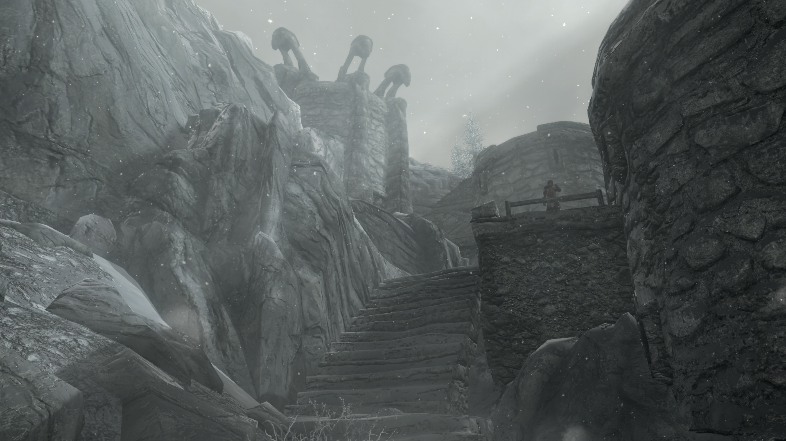
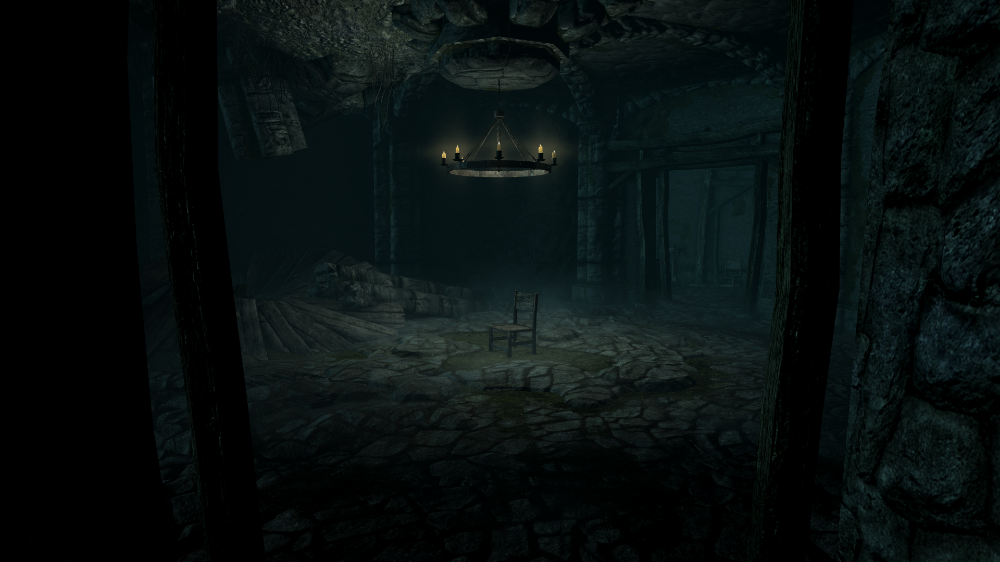

Vrage's Watch
(Originally posted on 24.10.2019)

What
A mod for Elder Scrolls V: Skyrim
A Fort/Draugr Crypt located northeast of Windhelm
Why
To give a powerful role playing option for necromancers. Contains a mask which allows you to raise (almost) unlimited amount of undead.
Design
Combined visual theme of an Imperial Fort and a Draugr Crypt
High usage of darkness and minimalism to convey an abandoned area with the occasional "splendour" room.
Lots of mass combat without big bosses
Balanced combat and puzzles with reactive and active challenges for the player
Loot
Vulonthur (Night King)
When the player is wearing the mask, she has:
A maximum of 100 undead summons at the same time.
The spell Dark Ritual which reanimates nearby corpses to fight for you. It is an expert level conjuration spell with a default magicka cost of 497.
Available
Repo
Nexus
Bethesda (PC)
Bethesda (XBOX)
